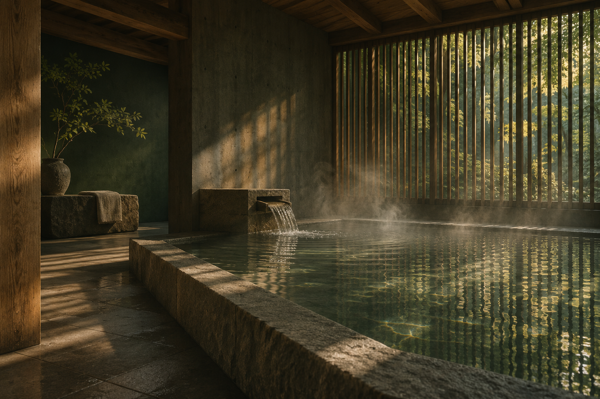
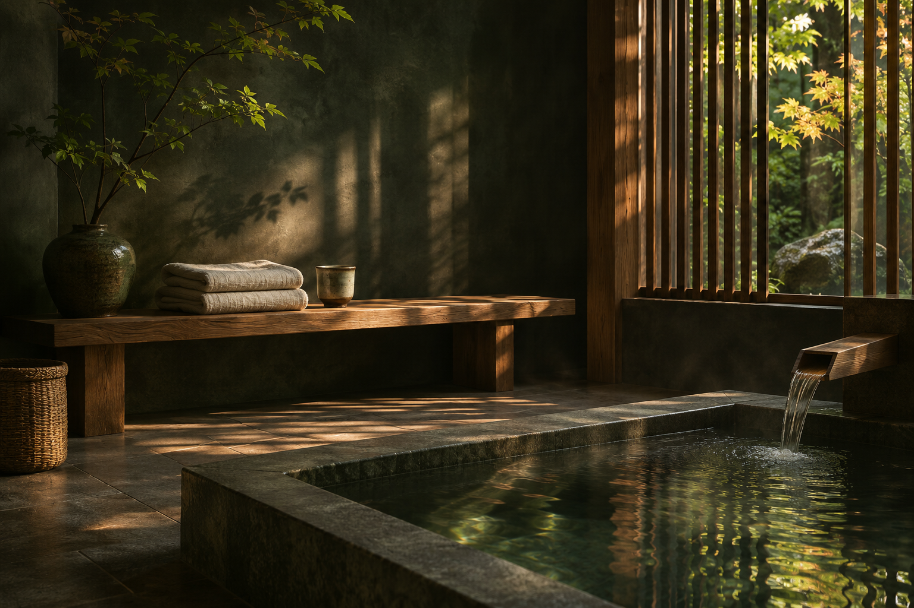

A place to return to yourself
Make room
for stillness.
Warm water. Quiet spaces. Time that belongs entirely to you.
Discover Still Water / Scroll to exploreA little less, a little slower
Somewhere between the water and the quiet, you find your way back.
Still Water is an imagined neighborhood bathhouse: a simple invitation to step away from the noise, settle into the warmth, and let the day unfold at its own pace.
Explore the spacesConsidered spaces
Come as you are.
Leave a little lighter.
A sequence of spaces made for warm water, unhurried conversation, and moments of quiet.

The quiet room
Rest & resetA gentle guide
Make a ritual
of doing less.
There is no perfect way to slow down. Here is a little inspiration for finding your own rhythm.
Leave your shoes and the pace of the outside world at the door. Take a few easy breaths and give yourself permission to be here.
Take your time at the washing station before entering the shared bathing spaces. Towels and simple essentials are ready for you.
Ease into the warm water. Stay for a while, or take breaks whenever you like. There is no schedule to keep.
Find a quiet seat, drink some water, and let the warmth settle. Take the feeling of a slower day with you.
A little time for yourself
We'll be here
when you need us.
Come for a quiet hour or make an afternoon of it. Bring a friend, bring a book, or simply bring yourself.
- Bathing
- Warm water & quiet spaces
- Bring along
- Swimwear & an open afternoon
- Good to know
- Towels are provided
Still Water is a fictional bathhouse concept.